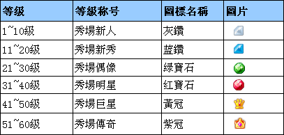

1. 什么叫秀场？
秀场是专门提供给娱乐类型的语音群使用的群应用功能，秀场应用中，麦序上表演者可以进行个人的展示表演，并且接收观众赠送的礼物以及爱心，提高自己的魅力值。
2. 在秀场我能做什么？
秀场应用可以让您变成万众举目的RC明星，通过表演各式各样的才艺来获取观众们的礼物和爱心，也可以在秀场中通过赠送礼物和爱心去支持自己喜欢的歌手和明星，让您和偶像零距离的接触。
3. 什么是RC币？如何获得RC币？
RC币为RC推出的平台币，是流通于平台的货币，用于RC平台的道具购买。
RC币通过储值渠道储值获得，目前储值渠道有：奇米卡、台湾GASH小额支付、台湾GASH乐点卡、GASH香港GASH点数卡、香港GASH转点服务五个。
4. 什么是秀币？如何获得秀币？
秀币是流通于娱乐秀场的货币，可用于购买秀场礼物、道具等。
秀币的获得渠道有两个：1.通过RC币兑换获得，1RC币=8秀币+秀币礼包（秀币礼包为您兑换成秀币总价值的20%）；2.通过获得的秀点兑换获得，兑换比例1秀点=1秀币；
5. 如何获得秀点？
秀点是用户通过上麦表演获得礼物后，由礼物转换成秀点值，统称为秀点。
6. 秀点可以用来做什么？
秀点可以用来兑换秀币，兑换方式：进入个人秀—我的帐户—选择"秀点兑换秀币"即可兑换。秀币可用来购买礼物赠送给表演者。
7. 如何获得爱心？
通过秀场应用可使用银豆免费换取爱心，每三天有换取一个爱心机会，每个月最多可以换取10个爱心；
PS：通过用银豆免费兑换爱心，第一次兑换完爱心后，如果不赠送爱心，三天后则没有兑换爱心的机会，必须先赠送之前兑换的爱心，才可以兑换，所以爱心是不能累积的；
兑换不用一直挂在线上三天的，只要您三天后登入RC，赠送完第一次爱心之后，就能兑换第二个爱心。
8. 爱心怎么用？爱心是否会累积？
爱心主要用于赠送给麦序上表演者，表演者收到爱心将会获得魅力值的成长，爱心是评定一个歌手或者主播人气指数的标准和评价；
如果用户领取的爱心当月没有使用，不会累积到下一个月；表演者收取的爱心永久累计。
9. 什么是麦上名片？
麦上名片为秀场应用中，麦序上表演者展示的个人秀大头照；可根据魅力值上传多张大头贴，
见下表：
| 魅力值 | 可上传头像数量 |
|---|---|
| 0—100 | 1 |
| 101-1000 | 2 |
| 1001-5000 | 3 |
| 5001-10000 | 5 |
| 10001-20000 | 6 |
| 20001-50000 | 8 |
10. 什么是魅力值？
魅力值为麦序上主播表演时，观众在秀场应用中赠送爱心、礼物、鲜花给表演主播后，主播获得的肯定认可指数，魅力值越高，麦序上主播等级将越高，能使用的道具越多；
新魅力值计算方式：爱心点数+ 礼物价值点数
11.魅力值的计算方式？
赠送1个爱心产生100点魅力，下麦后即可更新魅力点；
赠送10秀币礼物产生100点魅力，下麦后即可更新魅力点；
赠送20秀币礼物产生200点魅力，下麦后即可更新魅力点；
赠送50秀币礼物产生500点魅力，下麦后即可更新魅力点。
12. 表演者等级称号有哪些？
表演者等级共分为60级，每10级一个称号，不同等级显示不同的颜色和图标；

13. 什么是大礼物？
赠送大礼物时，将会获得一个全屏动画效果，大礼物是礼物中比较贵重的礼物，能为麦序上主播增加更多的秀点。
14. 什么叫礼物包裹？
在礼物视窗处，您可以查看自己的礼物包裹，包裹里会展示系统自送给您的礼物、抽奖获得的礼物、通过活动获得的礼物；双击包裹的礼物即可赠送。
15. 什么叫个人秀？
个人秀是您在秀场的个人中心页面，里面能查看到您的个人娱乐资讯和您收赠礼物动态。
16. 什么叫秀场管理？
秀场管理是针对拥有秀场应用的语音群，进行秀场资讯和动态明细的管理。
17. 赠送单一小礼物和多个小礼物有什么不同？
赠送一个小礼物时，将会获得一个刷屏的动态效果；赠送多个小礼物时，将会获得一个图型动态效果。
18. 什么是送礼成长、什么为闪耀星级？
1、只需要您赠送礼物秀币价值为以下列表即可获得相应称号图标；（1秀币礼物也会计算）
| 送礼消费点数 | 等级称号 |
|---|---|
| 1,000 | 1级富豪 |
| 5,000 | 2级富豪 |
| 15,000 | 3级富豪 |
| 30,000 | 4级富豪 |
| 50,000 | 5级富豪 |
| 100,000 | 6级富豪 |
| 200,000 | 7级富豪 |
| 400,000 | 8级富豪 |
| 650,000 | 9级富豪 |
| 1,000,000 | 10级富豪 |
| 1,500,000 | 男爵 |
| 2,000,000 | 子爵 |
| 2,500,000 | 伯爵 |
| 3,500,000 | 侯爵 |
| 5,000,000 | 公爵 |
| 8,000,000 | 郡公 |
| 12,000,000 | 国公 |
| 17,000,000 | 王爵 |
| 23,000,000 | 潘王 |
| 30,000,000 | 郡王 |
| 38,000,000 | 亲王 |
| 47,000,000 | 国王 |
| 57,000,000 | 皇帝 |
| 68,000,000 | 圣帝 |
| 128,000,000 | 神 |
| 256,000,000 | 宙斯 |
2、只要您过去7天秀场消费秀币到达以下列表，您的送礼称号图标即可获得该效果；
| 闪耀星级 | 过去7天消费秀币 |
|---|---|
| 闪耀1星 | 20,000 |
| 闪耀2星 | 50,000 |
| 闪耀3星 | 100,000 |
| 闪耀4星 | 200,000 |
| 闪耀5星 | 500,000 |
19. 关注和召唤道具如何使用？
关注召唤道具是为了让用户可以及时获得表演者的表演邀请，让RC秀场表演者与观众可以更好的互动。
1、 如何关注表演者？
RC用户可以通过秀场和表演者个人秀页面对表演者进行关注。目前暂定每个用户最多只能关注100个表演者，达到上限请在自己个人秀的「我关注的人」进行管理。
2、如何取消对表演者的关注？
如果用户需要取消对某个表演者的关注，可以点击该表演者的秀场「已关注」按钮对其进行取消关注，另外也可以在该表演者的个人秀和「我关注的人」点击取消关注。
3、如何使用召唤道具？
表演者上麦后点击秀场召唤道具，所有关注该表演者的在线用户都能收到表演者邀请的小窗，用户点击「进入表演者现场」将跳转到表演者所在的频道。如何用户长时间没有点击邀请的小窗，小窗会自动消失。
目前暂定只有官方认证视讯主播才有权限使用召唤道具，每天每人一次免费使用机会，其他用户使用权限开放时间和道具使用政策调整请留意官方的最新公告。